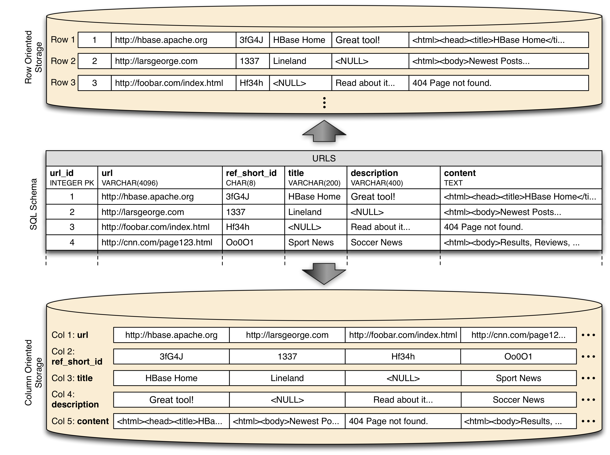
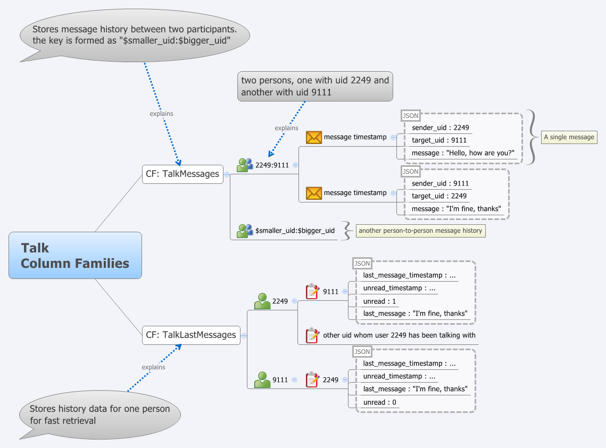

Базы данных: введение, часть восьмая
Илья Тетерин
2011-11-09
(use arrow keys or PgUp/PgDown to move slides)
Илья Тетерин
2011-11-09
(use arrow keys or PgUp/PgDown to move slides)
Column Oriented Database
Bigtable
HBase
В 2006 году опубликована статья labs.google.com/papers/bigtable.html.
Описывается система, позволившая хранить петабайты данных на тысячах серверов и используемая в 60+ проектах.
Предоставляет API распределенной, сортированной Map с произвольными текстовыми данными в качестве значений.
Bigtable - распределенная, разряженная, многомерная сортированная Map (ассоциативный массив).
Ключ массива - id ряда, колонка, отметка времени (timestamp).
Значение - произвольный массив байт.
(row:string,column:string,time:int64) -> string
Ключ - произвольная строка с максимальной длиной 64K.
Обычно ключ 10-100 символов.
Любая операция в пределах ключа - атомарна с точки зрения пользователя.
Так проще пользователям понимать поведение системы при многих потоках обновления.
Данные сортируются в соответствии с порядком ключей (по алфавиту строчного представления ключа).
Данные автоматически нарезаются на поддиапазоны ключей - tablet - блок данных для раскладки в кластер и регулировки нагрузки.
Таким образом - запросы по малым диапазонам ключей (Иванов-Ивановы) можно обработать на 1 машине.
Подбирая ключи - можно обеспечить локальность данных (обратная запись домена ru.yandex, ru.yandex.company) - данные будут лежать в одном или соседних tablets.
Column family:
Column qualifier:
language:id="en_US" anchor:ru.yandex.company="http://company.yandex.ru/public/articles/" anchor:com.google.labs="http://labs.google.com/papers/bigtable.html"
Доступ и хранение - на уровне отдельных column family. Таким образом один процесс - пишет base column family (CF), другой на основании этой CF создает anchor CF etc.
Пример: для CF content выставляем N=3 ... и получается, что в архиве хранятся последние три версии страницы, что видел crawler.

Запись в Bigtable
// Open the table
Table *T = OpenOrDie("/bigtable/web/webtable");
// Write a new anchor and delete an old anchor
RowMutation r1(T, "com.cnn.www");
r1.Set("anchor:www.c-span.org", "CNN");
r1.Delete("anchor:www.abc.com");
Operation op;
Apply(&op, &r1);
Чтение из Bigtable
Scanner scanner(T);
ScanStream *stream;
stream = scanner.FetchColumnFamily("anchor");
stream->SetReturnAllVersions();
scanner.Lookup("com.cnn.www");
for (; !stream->Done(); stream->Next()) {
printf("%s %s %lld %s\n",
scanner.RowName(),
stream->ColumnName(),
stream->MicroTimestamp(),
stream->Value()); }
Bigtable:
HBase - открытая, доступная реализация Bigtable
HBase is the Hadoop database.
Use it when you need random, realtime read/write access to your Big Data.
This project's goal is the hosting of very large tables -- billions of rows X millions of columns -- atop clusters of commodity hardware.
HBase is an open-source, distributed, versioned, column-oriented store modeled after Google' Bigtable: A Distributed Storage System for Structured Data
HBase provides Bigtable-like capabilities on top of Hadoop.
Книга: HBase: The Definitive Guide by Lars George, Sept 2011
labs.google.com/papers/bigtable.html
Bigtable: A Distributed Storage System for Structured Data by Fay Chang, et.
HBase: The Definitive Guide: Intro by Lars George, at OReilly
HBase: The Definitive Guide by Lars George, Sept 2011
Блоги:
HBase Architecture 101 - Storage by Lars George
HBase Architecture 101 - Write-ahead-Log by Lars George
BigTable Model with Cassandra and HBase by Ricky Ho
HBase vs. BigTable Comparison by Lars George
WTF is a SuperColumn? An Intro to the Cassandra Data Model by Arin Sarkissan
The Underlying Technology of Messages by Kannan Muthukkaruppan
Myths Rumors Fud Hate NoSQL Cassandra vs hbase by Edward Capriolo
HBase vs Cassandra by Jesse Shieh
Real Life Cassandra by Dave Gardner
